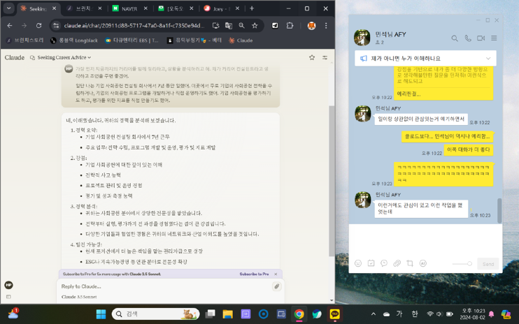
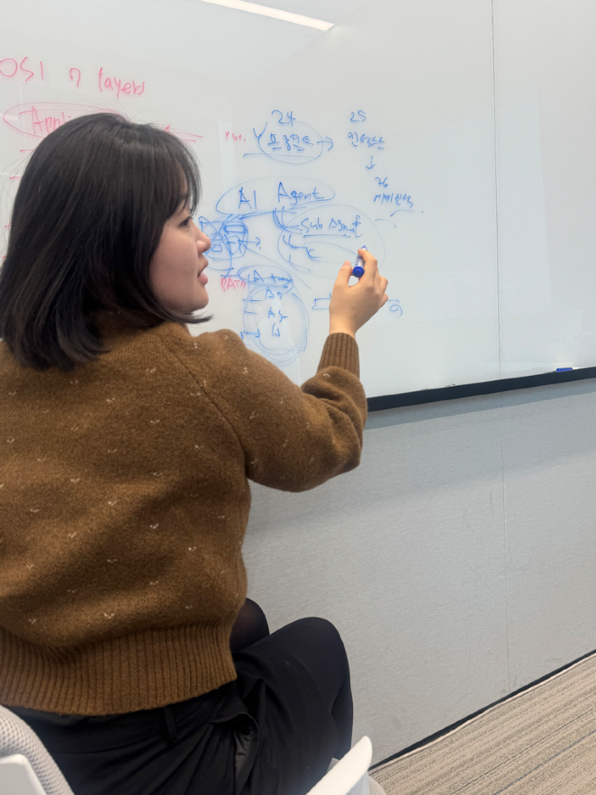
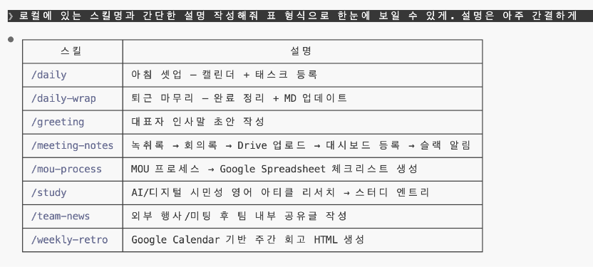
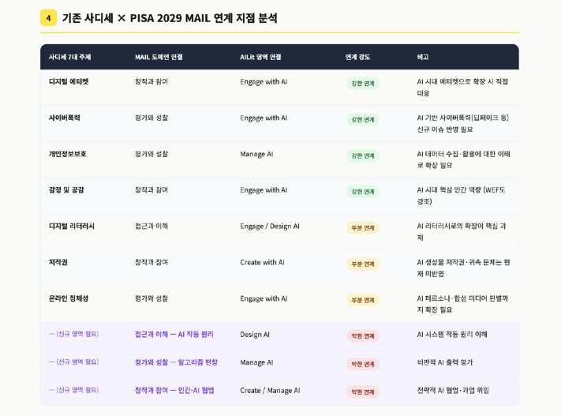
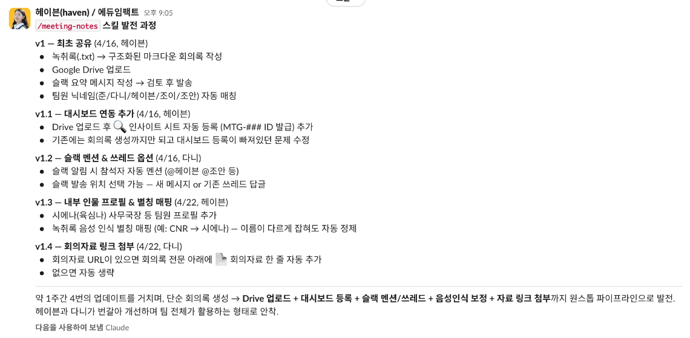
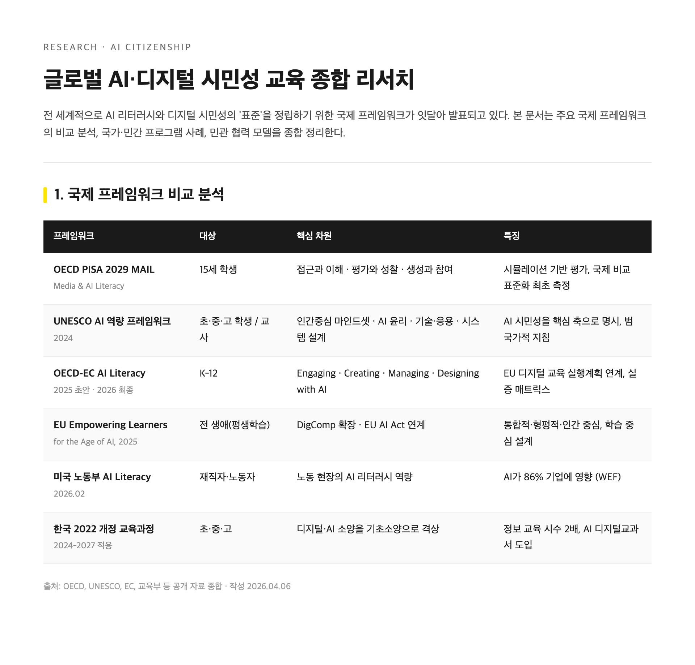
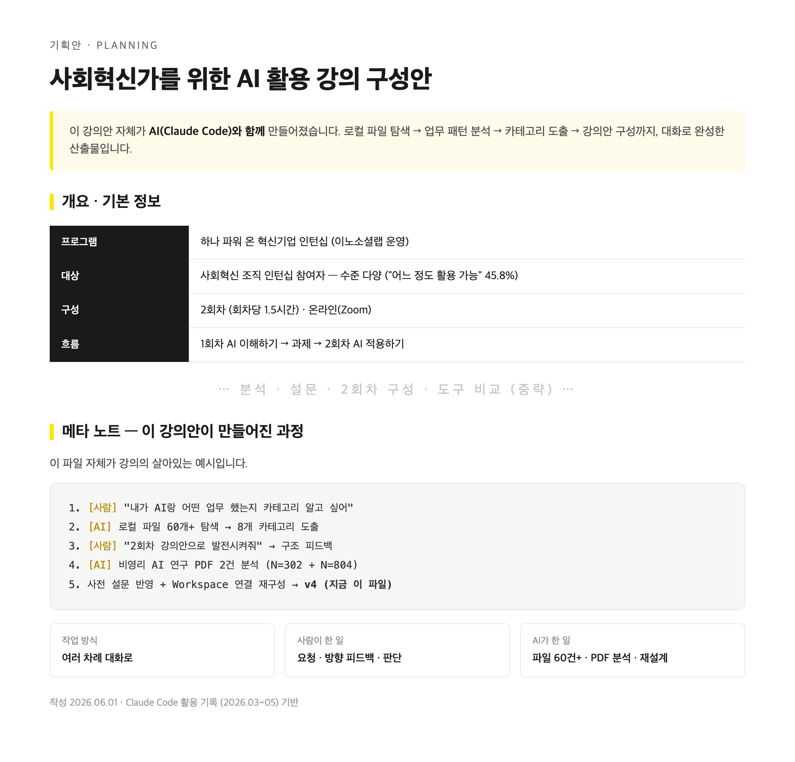
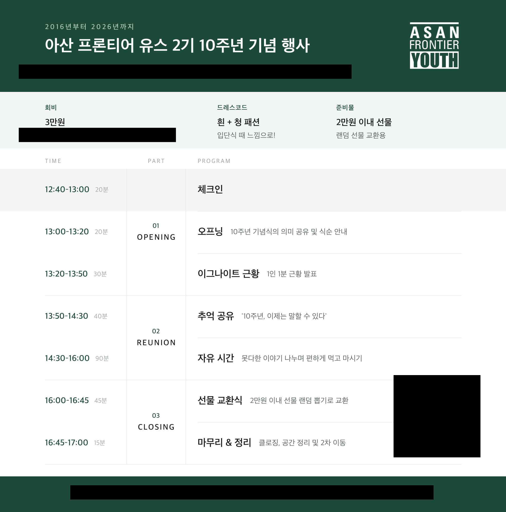

AI 이해하기
AI 이해하기
마인드셋 전환 + 실무 활용 + 잘 쓰기
AI 적용하기
업무 설계 + 팀 차원 활용 + 임팩트 확장
AI에 대한 두려움을 내려놓고,
실무에서 바로 써보고,
"잘" 쓰는 감각까지 잡기
지금 보고 계신
이 강의 자료도
AI와 함께
만들었습니다
프롬프트를 뭐라 치는지도 몰랐던
비개발자의 우당탕탕 AI 표류기
박해주 · 카카오임팩트 에듀임팩트팀
전 플랜엠 임팩트 컨설턴트
영상 편집, 문서 작성, 일일 업무 관리 같은 개인 업무부터
Google Workspace와 AI를 연결해 팀과 함께 일하는 방식을 바꿔보는 것까지.
현장에서 직접 부딪혀가며 AX를 체화하고 있습니다.
전문가가 아니라 먼저 써본 사람으로서, 솔직하게 나누고 함께 고민하는 시간이 되었으면 합니다.

마인드셋 전환
2024.07
Claude와의 첫 만남
프롬프트를 뭐라고 입력해야 할지조차 모르던 시절.

2026.03
AX 본격 시작
두려움과 의구심을 누르며 일단 얼레벌레 사용 시작.

2026.06
출근부터 퇴근까지 함께
매일 AI와 함께 업무 수행. 이 강의 자료도 함께 제작.

아묻따
아무것도 묻지도 따지지도 않고
— 일단 물어보기에서 시작된 여정.
별다묻
별걸 다 묻고 별걸 다 시키게 되는 단계
— 소소한 성공이 쌓이면 자연스레 찾아오는 다음 모습.
일단 두려움을 내려놓고
먼저 많이 써보기
제 이야기를 했으니
여러분은
어떠세요?
이미 AI를 활용 중
"어느 정도 활용 가능" 46%
"기본 기능 사용" 38%
답변 품질이 들쭉날쭉
같은 질문도 결과가 다르고
어떻게 물어야 할지 모르겠다
AI에게 잘 질문하는 법
2위 보고서·기획서 작성
3위 영상 제작 AI
| 여러분 설문 | 비영리 현장 연구 | 같은 이야기 |
|---|---|---|
| 83%+ 활용 중 | 개인 사용률 92.7% 1 | 다들 이미 쓰고 있다 |
| "답변 품질 들쭉날쭉" | 교육/훈련 없음 35% 2 | 혼자 더듬더듬 쓰고 있다 |
| "잘 물어보는 법" 1위 | 문서작성 75~91%, 자료조사 71~82% 1,2 | 쓰긴 쓰는데 좁게 쓴다 |
처음엔 하나에서 시작해서
차근차근 넓혀왔습니다
직접 만들어보기
리서치 시각화, 영상 편집,
발표장표까지 AI와 제작

업무 흐름 자체를 바꾸기
단일 스킬에서 원스톱
워크플로우로 확장

여러분이 궁금하다고 하신
잘 물어보는 법,
문서 작성 활용을
오늘 실제 사례로 풀어보겠습니다
실무 활용
도구는 많지만, 결국 용도별로 나뉩니다
전부 쓸 필요 없이, 나에게 맞는 도구를 사용하면 됩니다 — 노란 표시가 제가 주로 쓰는 도구예요
AI로 해본 것들
리서치
주제 하나 던지면 자료를 찾아서 정리해주는 흐름
- 데이터 분석 — 40페이지 보고서도 핵심 추출
- 주제/URL 기반 심층 리서치
- 벤치마크 사례 조사, 비교 분석
팩트체크 장치를 반드시 두세요
— 근거 요청, 출처 명시, 모르면 모른다고

문서 작성
초안 작성부터 톤 변환까지, 다양한 문서에 활용
- 회의록 — 녹취록을 구조화된 문서로
- 보고서 · 기획서 — 뼈대 잡기 + 살 붙이기
- 인사말 · 공문 — 초안 작성 + 톤 변환
원하는 결과물의 구조를 먼저 잡아주면
AI가 채울 수 있는 것이 많아집니다

콘텐츠 제작
텍스트부터 디자인까지, AI와 대화하며 만들기
- SNS 홍보 문구 · 뉴스레터 톤 변환
- 카드뉴스 · 포스터 · 식순지 디자인
- 발표 자료 — 구성 잡기 + 초안 작성
원하는 결과물의 좋은 레퍼런스를 함께 던져주면
AI의 출력 품질이 확 달라집니다

회의록 시연
결과가 완전히 달라집니다
같은 녹취록,
다른 결과
A. 그냥 던진 것
"이 녹취록 회의록으로 정리해줘"
B. 맥락을 준 것
구조 + 맥락 + 참석자 정보 + 원하는 형태
좋은 프롬프트의 요소
맥락
배경, 목적, 상황을
함께 알려주기
구체적 요청
무엇을, 어떻게
해달라는지 명확하게
원하는 형태
구조, 톤, 분량,
결과물 형식 지정
AI는 초안을 만들고,
사람은 판단하고 수정한다
완벽한 한 방이 아니라,
대화하면서 고쳐가는 감각이 중요합니다
내 프롬프트
설계해보기
업무 하나 떠올리기
이번 주에 해야 할 리서치, 문서, 콘텐츠 중 하나
프롬프트 작성하기
오늘 본 요소(맥락 + 구체적 요청 + 원하는 형태)를 의식하면서
채팅에 공유하기
서로의 프롬프트에서 힌트를 얻어가세요
잘 쓰기
딸깍이 아니다
입력의 질이 출력의 질을 결정합니다
맥락
같은 녹취록도
어떻게 시키느냐에 따라
결과가 완전히 달랐죠
구체성
원하는 구조, 배경, 톤까지
구체적으로 줄수록
결과가 좋아진다
레퍼런스
좋은 예시를 함께 주면
출력 품질이
확 달라진다
AI 출력은 항상 초안이다
검증과 책임은 사람의 몫이다
근거 요구
"출처를
함께 알려줘"
소스 지정
"공식 보고서에서만
데이터를 활용해"
불확실 제외
"확실하지 않은 내용은
빼줘"
AI의 몫과 나의 몫을 나눈다
역할 분리의 감각이 곧 AI와 일하는 감각입니다
AI에게
초안, 정리,
반복 작업
나에게
판단, 맥락,
방향 설정
함께
역할을 나눌수록
일의 효율이 올라간다
"나 없어도 되는 거 아냐?"
두려워서 안 쓰는 것도,
무비판적으로 다 맡기는 것도 아닌
맥락, 판단, 방향, 사람 사이의 뉘앙스는
AI 영역 밖에 있습니다

AI 활용과 유의미한 상관이 없었다"
여러분이 하는 일의 본질은
달라지지 않습니다
수혜자와의 관계, 현장 판단, 사람의 온기는 AI 영역 밖에 있습니다
Q&A
아까 쓴 프롬프트,
직접 돌려보기
어떤 AI 도구든 상관없습니다 — 결과를 간단히 기록해주세요
프롬프트 실행
오늘 설계한 프롬프트로 AI에게 시켜보기
결과는 어땠나
쓸만했는지, 아쉬웠는지, 놀라웠는지
사람이 고친 부분
AI 결과물에서 내가 수정하거나 보완한 것
잘 된 것보다 안 된 것, 우당탕탕한 것이 더 좋은 공유 소재입니다!